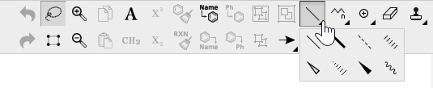

Customizing User Interface
The user interface of ChemDraw JS 17.1 can be customized from the following two aspects.
Customizing toolbar layout by modifying ChemDraw JS's configuration
Customizing look and feel of ChemDraw JS elements by overriding the CSS rules
The layout of the ChemDraw JS toolbar can be customized by modifying the configuration. Please refer to
Configuring ChemDraw JS for details about how to modify the configuration of ChemDraw JS.
The orientation of the ChemDraw JS toolbar can be horizontal or vertical.
Configuration.layout.orientation = "Horizontal"
Configuration.layout.orientation = "Vertical"
A tool can be shown or hidden by modifying the order property of the ChemDraw JS configuration.
Each tool or tool group defined in the array of the order property will be visible. To hide a tool or a tool group, remove the tool item from the order array.
Hint: The sample configuration file "chemdrawweb\configuration-sample.json" contains all supported tools.
Example: Removed all tool groups
All tool groups are removed from the configuration.
The position of a tool or a tool group can be managed by modifying the position of the target item in the order array of the configuration.
The tool groups can be collapsed according to the rule specified in the configuration.

The rule could be changed by specifying the value of the collapse property of the target tool group.
Three rules are supported.
auto: The target tool group is collapsed if the toolbar is not big enough to hold all tools.
always: The target tool group is always collapsed.
never: The target tool group is never collapsed.
If not specified, the auto rule will be applied.
Customizing Look and Feel of ChemDraw JS Elements
The look and feel of ChemDraw JS elements can be customized by overriding the default CSS rules. Conceptually, developers can inspect the DOM tree of ChemDraw JS with browsers' developer tools and find out the CSS rules to be overridden. However, it is recommended to refer to the key CSS classes below to avoid future upgrading problems. Because the other CSS classes or DOM IDs are not guaranteed to be unchanged in future versions.
Overriding a CSS Rule
To override the default CSS rules, the new rule should be defined in the CSS stylesheet files of the host application with the same class name with the prefix .cdd.cddroot and a white-space.
Example: Changing the font of the messages.
.cdd.cddroot .cdd-font {
font-family: "Sans";
}
Recommended CSS Classes
Example/Default styles
border: 1px solid #ccc;
background-color: #ededed;
.cdd-workspace-container
Example/Default styles
background-color: #ddd;
.cdd-progress-indicator
Example/Default styles
z-index: 10;
background-color: hsla(0,0%,100%,.5);
cursor: wait;
.cdd-logo
Example/Default styles
display: block;
position: absolute;
right: 20px;
bottom: 10px;
opacity: .5;
width: 65px;
height: 65px;
transition: opacity .5s,width .5s,height .5s;
z-index: 4;
user-select: none;
background-image: url(data:image/png;base64,...);
background-position: 50%;
background-size: contain;
background-repeat: no-repeat;
.cdd-clipboard-icon
Example/Default styles
display: block;
position: absolute;
left: 10px;
bottom: 20px;
z-index: 4;
opacity: .5;
user-select: none;
.cdd-clipboard-icon-image-enabled
Example/Default styles
border-color: #4caf50;
background-image: url(data:image/svg+xml;base64,...);
background-size: cover;
.cdd-clipboard-icon-image-disabled
Example/Default styles
border-color: #ccc;
background-image: url(data:image/svg+xml;base64,...);
background-size: cover;
Example/Default styles
position: relative;
width: 30px;
height: 30px;
pointer-events: none;
background: 50% no-repeat;
The image of one tool could be customized by overriding the corresponding CSS class. The tool names are consistent with the ones defined in ChemDraw JS's configuration.
Example/Default styles
background-image: url(data:image/png;base64,...);
.cdd-message
Example/Default styles
top: 100px;
z-index: 10;
cursor: default;
position: absolute;
width: 100%;
height: 0;
text-align: center;
.cdd-dialog-container
.cdd-dialog-title
Example/Default styles
font-size: 16px;
font-weight: 700;
padding-bottom: 10px;
text-align: center;
.cdd-dialog-content
Example/Default styles
width: auto;
height: auto;
Example/Default styles
text-align: center;
Example/Default styles
border: 1px solid #7fb451;
color: #fff;
background-color: #6cb442;
.cdd-font
Defines the global font style of tooltips, messages, dialogs.
Example/Default styles
font-family: Arial;
font-size: 14px;
Sample Customization Cases
| Use Case |
CSS Class |
Rules |
| Change the font of the message text |
.cdd-font |
font-family, font-size |
| Remove the logo of ChemDraw JS |
.cdd-logo |
display |
| Replace the image of a tool |
.cdd-tool-image-{ToolName} |
background-image |
| Change the background of the toolbar |
.cdd-toolbar-container |
background-color |
| Change the font size of the dialog title |
.cdd-dialog-title |
font-size |
| Change the color of the dialog buttons |
.cdd-button-[ok|cancel|danger] |
background-color |